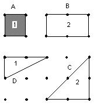
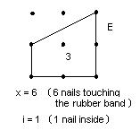
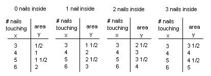
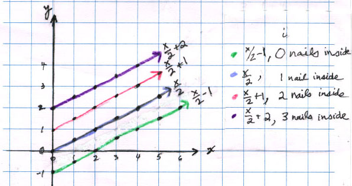
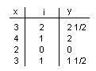
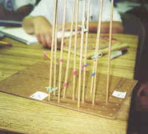

Geoboard Magic
by Maggie- a 7th grader, Patricia-a 9th grader and Paul-a 6th grader
I started with making a shape with 4 touching nails on the geoboard, 1 unit of area.

I had to figure out a rule for finding the area (y) inside the shape, with different numbers of nails touching the rubberband (x) and the number of nails inside the figure (i).

I wrote down how many units of area would be inside a figure depending on x and made a table, first for no nails inside:

I found patterns in the table, then I wrote the rule as
x - (x+2)/2 = y
Both Patricia and Paul graphed the pairs of numbers (x, y) from their tables, for each i.

They then were able to pick off the slope (1/2 for each one) and the intercept, easily, and write the rules more simply as
x/2 + -1 = y , when i=0
x/2 + 0 = y , when i=1
x/2 + 1 = y , when i=2, and so on.
The rule with i was simple to see, because the adding number was 1 less than i. They wrote the 3-variable rule as
x/2 + i - 1 = y (also known as Pick's theorem)

They checked this rule with the data they had and it worked!
Don helped Paul, then Maggie, make the 3-D graph of the area y in terms of x and i using the table above. The 3-D graphing board they used was a peg-board and dowel rods, marked off in units. The points were made with rubber bands. This 3-D graphing board was invented by Theo when he was in 5th grade- the same person who years later helped Don with his book "Changing Shapes With Matrices"! It looked like this:

3D graph of the area y (vertical axis) in terms of x, the number of nails touching the rubber band (coming towards you) and i the number of nails inside (going to the right). Check out DPGraph.com to graph in 3D on line- great!
==========================================
To other discoveries
To order
Don's materials
Mathman home